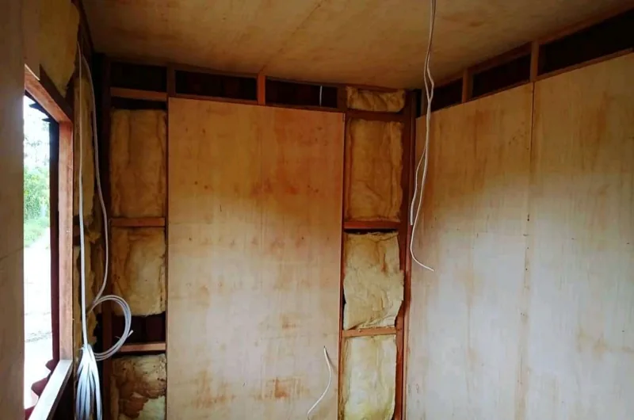
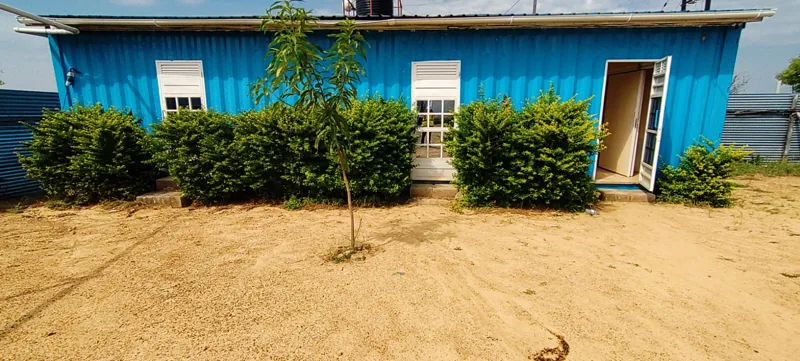

Shipping container homes are capturing people’s imaginations all over the world, but in the midst of the excitement, many myths have emerged. Are you ready to separate fact from fiction? Let us take a deep dive into the world of container homes and debunk some common myths!
Myth 1: You Should ALWAYS Use Spray Foam Insulation
Busted. Spray foam insulation, particularly closed-cell spray polyurethane foam (ccSPF), has gained a reputation as the go-to for insulating shipping container homes. Its popularity is due to its high R-value per inch and its dual function as a vapor retarder. However, this doesn’t mean it’s the only insulation option available. In fact, the choice of insulation should be tailored to your specific design and climate. For instance, if you plan to insulate the exterior of your container, other materials might provide the necessary insulation without the added cost of ccSPF. Additionally, in regions where condensation is less of an issue, the vapor retarding benefits of ccSPF may not be as crucial. Thus, while spray foam is an excellent option, it’s not always the best or most necessary choice.
Myth 2: All Shipping Container Homes Are Eco-Friendly

Busted. The idea that all shipping container homes are inherently eco-friendly is a misconception. While repurposing used containers can indeed be environmentally beneficial, using new containers isn’t as green. New containers, often referred to as “one-trip containers,” are manufactured specifically for shipping and then repurposed. This process negates the environmental benefits of recycling old containers that would otherwise be left to rust or be melted down at significant energy costs. Therefore, the true ecological advantage lies in reusing old containers, turning potential waste into functional living spaces.
Myth 3: Shipping Containers Can Be Buried As-Is
Busted. Some people dream of turning shipping containers into underground bunkers, inspired by various stories and videos. However, simply burying a shipping container isn’t feasible without significant modifications. Shipping containers are engineered to be strong when stacked and loaded, with weight distributed through their corner posts and supported by the floor. Burying a container subjects it to immense pressure from the surrounding earth, which it’s not designed to withstand. The horizontal forces from the soil can cause the walls to buckle, and the roof may collapse under the weight above. Structural reinforcements are essential to handle these pressures, making the process far more complex than just digging a hole and dropping in a container.
Myth 4: Shipping Container Homes Are Too Hot To Live In
Busted. The belief that shipping container homes are unbearably hot stems from their original use in transporting goods, where they can become ovens under direct sunlight. However, living in a container home is a different story. With proper insulation and air conditioning, the interior of a container home can be maintained at comfortable temperatures. Techniques such as adding shade, using reflective roof coatings, and incorporating ventilation systems further mitigate heat buildup. Thus, while the metal exterior can get hot, the interior can remain cool and livable.
Myth 5: Shipping Container Home Construction Is Complex

Busted. The complexity of building a shipping container home depends largely on the design. While intricate multi-story designs with numerous containers and elaborate features can indeed be complex, simpler designs are very approachable for DIY enthusiasts. Many people have successfully built their own container homes without prior construction experience, starting with basic, single-story layouts. The inherent strength and weatherproof nature of containers provide a solid foundation, making the initial construction phase less daunting. As projects become more elaborate, professional assistance might be needed, but starting with a straightforward design is entirely feasible for beginners.
Myth 6: Shipping Container Homes Are For Rich People
Busted. The idea that shipping container homes are only for the wealthy is misleading. While it’s true that some luxury container homes with high-end finishes and expansive designs can be costly, the origins of the container home movement were rooted in affordability. Many people turned to container homes as a solution to the rising costs of traditional housing, seeking an economical way to own a home. There are countless examples of container homes built for less than $50,000, proving that these homes can be an affordable option for those looking to minimize housing expenses.
Myth 7: All Shipping Container Homes Are Cheap
Busted. While many container homes are built with affordability in mind, not all are inexpensive. The cost of a container home can vary widely based on factors such as size, design complexity, and interior finishes. While it’s possible to build a budget-friendly container home, opting for luxury finishes, custom designs, and larger sizes can significantly increase costs. Essentially, container homes offer flexibility, allowing homeowners to scale their investment up or down based on their budget and preferences.